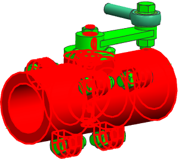

组合一个组件组与一个区域
-
在装配导航器背景中右击，确保显示组件组已被选中。
-
在部件中的组件组 节点下，右击 INTERNAL_PARTS 并选择添加区域到组件组。
-
在添加区域到组件组对话框中，选择框 FLOW_ZONE。
-
选择干涉
 。
。 -
点击确定。
这个区域被添加到了 INTERNAL_PARTS 文件夹中。
-
右击 Interferes with Box FLOW_ZONE 并选择应用。
